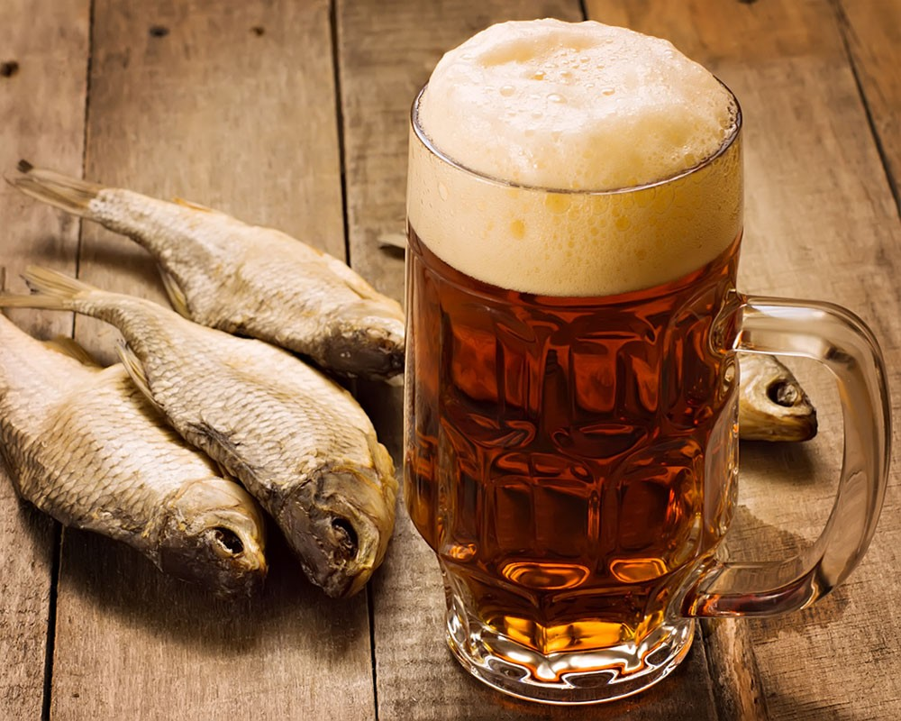

Что такое пиво. Почти все о пиве


По материалам книги Ивана Ильича Дубровина
" Все о пиве . "
А также из других источников Интернет
Уважаемый Читатель - после ознакомления с Книгой
рекомендую Вам заказать ее бумажное издание.
" Все о пиве . "
А также из других источников Интернет
Уважаемый Читатель - после ознакомления с Книгой
рекомендую Вам заказать ее бумажное издание.
Каждый знает, что за кружкой пива время летит незаметно, но известно ли вам, что это удивительное свойство пива было знакомо еще древним вавилонянам? Знаете ли вы, какой путь «проделывает» пиво, прежде чем попасть к вам на стол? Прочитав нашу книгу, вы узнаете не только это, но и многое другое! Вы даже сможете, следуя нашим советам, самостоятельно попробовать приготовить хмельной напиток. Мы предложим вашему вниманию оригинальные кулинарные рецепты с использованием пива. Ну и, разумеется, вы узнаете о целебных свойствах пива, а также о всевозможных нетрадиционных возможностях его применения.
- Что такое пиво.
- Введение.
- Глава 1. Дар Вавилона.
- Глава 2. « Не хвали пиво разливши, а хвали распивши ».
- Глава 3. За кружкой пива время летит незаметно.
- Глава 4. Сам себе пивовар.
- Глава 5. Пиво в кулинарии.
- Первые блюда.
- Вторые блюда.
- Соусы.
- Выпечка.
- Глава 6. Целительные свойства пива.
- Тонизирующие настои и отвары.
- Болеутоляющие средства.
- Бронхиальная астма.
- Бронхит.
- Желчекаменная болезнь.
- Болезни почек.
- Мочекаменная болезнь.
- Очищение почек.
- Простудные заболевания.
- Ангина.
- Заболевания легких.
- Бессонница.
- Успокоительные настои.
- Переутомление.
- Глава 7. « Заморочки из пивной бочки ».
- Какое бывает пиво.
- Наиболее популярные виды пива.
- Как хранить пиво.
- Пиво фильтрованное и нефильтрованное .
- Заключение.